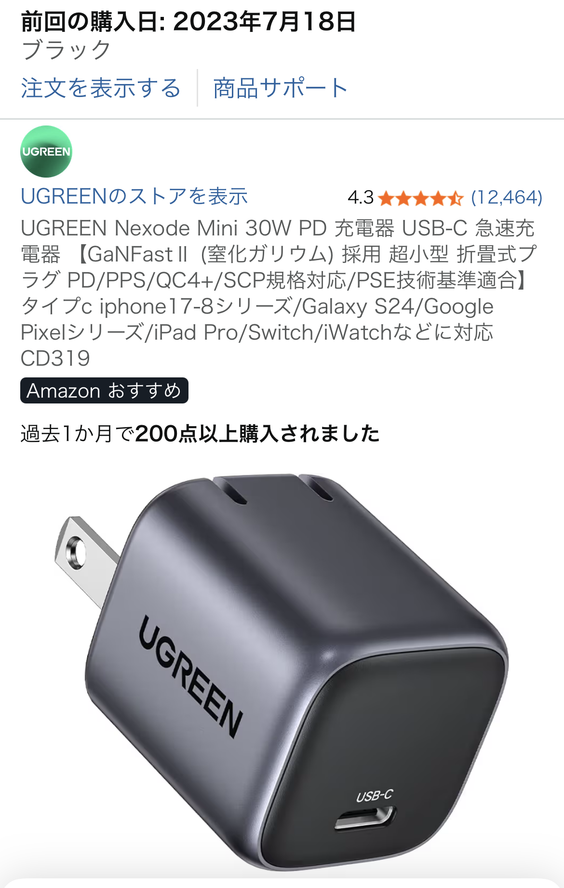

UGREEN折りたたみ式USB充電器を実際に使って分かった魅力と注意点【ロングセラーの定番ガジェット】
「問題なく使えていて、小型で端子を折り畳めるので持ち運びも便利」──そんな口コミどおり、UGREENの折りたたみ式USB充電器は、ガジェット系ブロガーの間でもたびたび登場するロングセラーの定番アイテムです。この記事では、実際の使用感と一般的な評価をもとに、メリット・デメリット・おすすめの使い方をまとめてレビューします。

UGREEN折りたたみ式USB充電器の概要
UGREENの充電器は、いわゆる「小型USB充電アダプタ」のジャンルに属する製品で、スマホやタブレット、ワイヤレスイヤホンなどの充電に向いた日常使いのガジェットです。特に、コンセント端子を折りたためるデザインが特徴で、カバンやポーチの中で他のガジェットを傷つけにくい構造になっています。
色はブラックを選びましたが、マット寄りの落ち着いた質感で、他のガジェットとも合わせやすい印象です。ロゴも主張しすぎず、デスクに出しっぱなしにしていても悪目立ちしません。
| サイズ感 | 一般的な純正充電器よりひと回り小さい印象で、ポーチにも収まりやすい |
|---|---|
| 端子タイプ | USB-A / USB-Cモデルなど複数バリエーションあり（購入時に要確認） |
| 特徴 | 折りたたみ式プラグ、小型設計、ロングセラーの定番モデル |
実際に使って感じたメリット
1. 小型＆折りたたみプラグで持ち運びがとにかくラク
口コミにもあるとおり、「小型で端子を折り畳めるので持ち運びも便利」という点は、実際に使ってみても強く実感しました。プラグを折りたたむと角が出っ張らないため、ガジェットポーチにそのまま放り込んでも他のデバイスを傷つけにくく、出張や旅行の荷物をコンパクトにまとめたい人にはかなり相性が良いです。
- プラグが飛び出さないので、モバイルバッテリーやイヤホンと一緒に収納しやすい
- カバンの中で他のガジェットに引っかからず、取り出しやすい
- コンセント周りでも邪魔になりにくく、壁際でも使いやすい
2. 「問題なく使えています」という安定感
レビューでは「問題なく使えています」とシンプルに評価されていますが、充電器のような“インフラ系ガジェット”にとって、これはかなり重要なポイントです。毎日使うものだからこそ、発熱が極端に大きい・接触が不安定・相性問題が頻発するといったストレスがあると一気に評価が下がります。
UGREENの充電器は、一般的なスマホやワイヤレスイヤホンの充電であれば、特に不具合を感じることなく安定して使える印象です。ロングセラーとして長く売れ続けているのも、「とにかく普通にちゃんと使える」という信頼感があるからだと感じます。
3. ガジェット系ブロガーにも愛用者が多い定番モデル
ガジェット系ブロガーのレビューやデスクツアー記事を見ていると、UGREENの充電器はかなりの頻度で登場します。特に、「純正よりもコンパクト」「価格と性能のバランスが良い」といった理由で、サブの充電器として複数個持っている人も少なくありません。
自宅用・職場用・持ち運び用と分けて配置しておくと、「あ、充電器を忘れた…」というシーンを減らせるので、ガジェット好きだけでなく、日常のちょっとしたストレスを減らしたい人にも向いていると感じました。
気になった点・購入前にチェックしたいポイント
大きな不満はないものの、購入前に知っておいた方がよいと感じたポイントもあります。
1. 急速充電の要件は事前に確認したい
最近のスマホは急速充電に対応しているモデルが多く、「どの規格に対応しているか」が充電器選びの重要なポイントになっています。UGREENの充電器にも複数の仕様があるため、USB-C対応かどうか、出力W数、対応規格は商品ページで必ず確認しておきたいところです。
「とりあえず充電できればOK」というライトユーザーなら問題になりにくいですが、タブレットやノートPCまで1台でまかないたい場合は、より高出力のモデルを選ぶ方が満足度は高くなります。
2. コンセント周りのスペースには注意
本体は小型とはいえ、マルチタップや壁コンセントの形状によっては、隣のコンセントと干渉する場合があります。特に、横並びのタップで大型アダプタと併用する場合は、少しレイアウトを工夫した方が使いやすいです。
とはいえ、折りたたみプラグのおかげで収納時のストレスはかなり軽減されているので、総合的には「持ち運び重視の人にちょうどいいバランス」のサイズ感だと感じました。
こんな人にUGREEN折りたたみ式USB充電器をおすすめしたい
実際に使ってみた印象と口コミを踏まえると、UGREENの折りたたみ式USB充電器は次のような人に特におすすめできます。
- 出張や旅行が多く、小型で持ち運びやすい充電器を探している人
- ガジェットポーチの中身をできるだけコンパクトにまとめたい人
- 純正充電器の予備として、コスパの良いサブ充電器が欲しい人
- ガジェット系ブロガーがよく紹介している“定番どころ”から選びたい人
逆に、ノートPCまで1台で高速充電したいヘビーユーザーであれば、より高出力の充電器をメインに据えつつ、UGREENの小型モデルをサブとして持っておく、という使い分けもアリだと思います。
まとめ：ロングセラーの安心感と携帯性を両立した定番充電器
UGREEN折りたたみ式USB充電器は、「問題なく使えている」「小型で端子を折り畳めるので持ち運びも便利」という口コミどおり、日常使いから旅行まで幅広いシーンで活躍してくれる定番ガジェットでした。派手さはないものの、ロングセラーとして選ばれ続けているのも納得のバランス型モデルです。
充電器は一度買うと長く使うアイテムなので、信頼性と携帯性のバランスを重視したい人には、候補に入れておいて損はないと感じました。価格も比較的手に取りやすいレンジなので、「とりあえず1つ持っておきたいサブ充電器」としてもおすすめできます。
※本記事のリンクはAmazonアフィリエイトリンクを含みます。
UGREEN折りたたみ式USB充電器の詳細・価格をAmazonでチェックする